Chapter-5
青藏高原之旅·迎接最纯粹的阳光
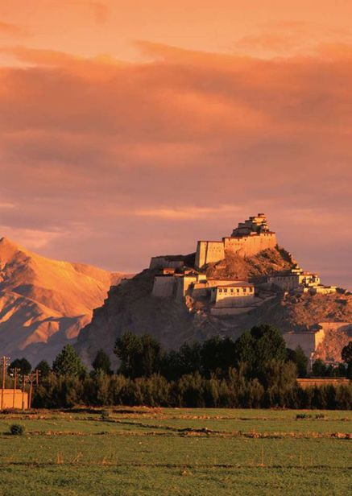
青海
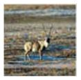
Qinghai·通透的水天
她是恩泽百姓的守护神，更是天籁中最唯美的一抹纯真，水的尽头，圣地方显。这里有娇艳的格桑花，这里有清澈的婴儿蓝，这里采撷出世间少有的天籁，在一片皑皑的雪色中，凝成一道通透的风景，比天更悠远，比地更无边……
可可西里
Kekexili
藏 北 的 娇 艳 格 桑
藏北，一片神秘的地域，像一个带着面纱的异域少女，人们翘首期盼着一睹她的芳容，而她，偏偏只为悦己者容，秀色中倔强之气隐隐作祟。这方醉人的神圣土地，就是可可西里……
可可西里，蒙语的翻译是“神秘的少女”，在藏地，藏民们喜欢给女孩子起名叫“达瓦”，就是月亮的意思。藏民们崇拜月亮，因为藏地的月光是纯净的，透着至真至善的情感。可可西里就是一位叫达瓦的少女，她纯真，神秘，又透着隐约的冷漠。
这里是世间最宁静的土地，远离城市的喧嚣，没有世俗的侵扰。这里广阔的草原和巍峨的雪山，甚至从来没有留下人类的足迹。
玉珠峰下，青藏铁路呼啸而过，连接着醇美与喧嚣。
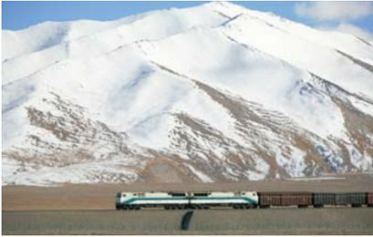
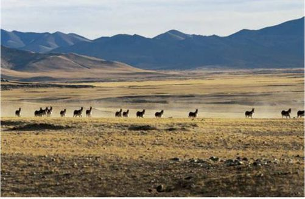
藏羚羊主要生活在中国青藏高原，是国家珍稀物种。它们通常在海3000～5000米的高原中，最近几年因为过度捕杀而数量骤减。可可西里是藏羚羊分布较广的地区之一。
猎猎长风奔跑在可可西里广袤的土地上，走过草原，跨过河流，拂过草甸下藏羚羊柔软的绒毛，拭去格桑花的露水，亲吻一座座雪山冷酷的面孔。长风呼啸而过，哼着隐约的调子，像是远方的藏民跳起的锅庄。
因为陆川，我们认识了可可西里；因为青藏铁路，我们走进了可可西里。
当火车的汽笛响彻可可西里广袤空旷的土地，不知藏羚羊这些高原的精灵是否会想念那些有力的大手和质朴的脸庞。
因为《可可西里》，我们认识一群卫士，他们守护着高原的精灵藏羚羊，他们用脚步丈量可可西里的长度，他们用躯体震慑盗猎者指向藏羚羊的长枪。他们的故事，是一首写满眼泪和希望的诗歌，在高原的上空一次次盘旋，一次次激荡。那些沾满鲜血的土地，会得到卫士们灵魂的庇佑，在来年的春天，一定会开出更美更娇艳的大片大片的格桑花……
每每提及可可西里，总会涌动一种源自灵魂的敬畏，敬畏自然，敬畏生命。这片土地寄托着人类最纯净的灵魂，数以万计的人仰望可可西里，魂牵梦系可可西里，因为这里承载着大自然最原始的面孔，珍藏着人类最纯真的本性。可可西里，一直在安静地守望人类犹如雪山一样质朴的灵魂。
青海湖
Qinhai Lake
婴 儿 般 清 澈 的 蓝
倘若你行走过许多地方，见过许多的人，喝过许多的酒，那么在这里驻足的时候，便会多一份淡定和恬淡。因为心中多了一份虔诚，生活便从此绚烂多姿起来。因为心中多了一抹圣洁，那瞳孔中倒映出的色泽，才会在与人对视的刹那，透出那股婴儿般的蓝。
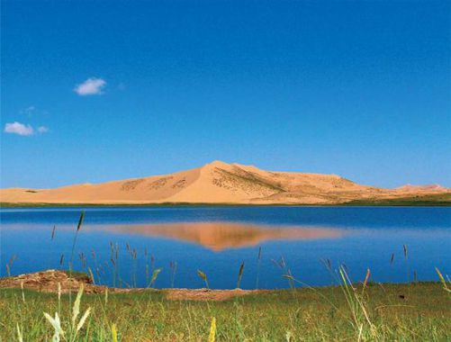
幽美的青海湖
青海湖，烟波浩渺中，碧海连天畔，四座巍峨的高山争相守护着它的圣洁，无论从哪个角度望去，它如巨盘一般的翡翠，镶嵌于高山草原，完全忽略了人们的叹惋。
它本是自然的恩赐，缘何不能留在自然之间？
在古代，青海湖被称为“西海”，蒙语中，“错温布”是它的别称。“青色的湖泊”，在蒙古族人的字典中，它的释义显得简单而澄明。飞机上俯视的瞬间，一面椭圆形的镜子进入视野，那蓝汪汪的镜面，便是青海湖最傲人的绝美姿态。
传说，龙王有四子，三个都被分封为一海之王，只有第四个儿子没有得到皇权。于是，龙王特意在高原为它开凿了一面湖，青海湖由此得来。小儿子，总是会受到加倍的宠爱，龙王开凿这面湖泊之时，早已酝酿好这里的绮丽。神秘的色彩，湖中的水怪，直至今日，人们仍对那些古老的传说确信不已。
沙岛
在青海湖东北，沙岛曾是青海湖中最大的岛屿。18平方千米的面积，海拔在3252米以上。沙岛因为湖中沙垄突出水面，受风沙堆积而成。1980年，沙岛东北端与陆地相连成为半岛，并围成了面积约33平方千米的沙岛湖。岛上无植被，是鱼鸥生息繁衍的地方。
面对青海湖，一种辽阔的心境随湖面一同打开。一切美得刚刚好，纯净得刚刚好。面对青海湖，灵魂深处的污垢被涤荡得失去行踪，心，突然就成为透明的粉色，像水晶，或者比水晶更加剔透。
七月的青海湖，美得别致。当南方成片成片嫩黄的油菜花早已褪去裙摆，这里的油菜花，却开得甚是欢快。那金灿灿的颜色将艳丽倒映在湖泊中，紧围着湖泊舞蹈的雀跃姿态，让人心生爱怜。从高处向下看，一片片黄色，倒映在碧水蓝天之间。远山看到这样的美丽，忍不住将自己绽放得更加翠绿，云儿看到这样的美丽，忍不住将自己涂抹得更加洁白。
青海湖的落日，映着不可一世的绝美。千古佳景的比喻，丝毫不显得夸大。当夕阳的余晖渐渐覆盖住湖中的波光，青海湖在一瞬间粉红了面庞，那恬静的心情，仿佛是恋爱滋生过的土壤，看似平静，实则心花怒放。
不知为什么，甚至连鸟儿都更加喜爱这里。每年每季频频停留驻足。日复一日，这里便成了鸟的天堂。
如果有一天，你厌倦了喧嚣的生活，那婴儿眼睛中水汪汪的湛蓝，势必会成为你千山万水的跋涉中最终停靠的岸。就在踏入青海湖的瞬间，那抹蔚蓝，就那样在记忆中定格，成为行走中唯一的纯美风景。
七月的青海湖，美得别致。当南方成片成片嫩黄的油菜花早已褪去裙摆，这里的油菜花，却开得甚是欢快。
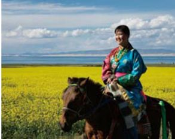
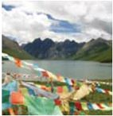
作为青藏高原的腹地，三江源地区有着浓重的高原风情，尤其是这样灿烂的风马旗。
三江源
Sanjiangyuan
神 奇 瑰 丽 的 雪 域 圣 地
如果没有源头的滋养，之后的一切，都将失去丰腴的色泽。所以，当你看到那娇艳欲滴的格桑花，当你看到那雄壮秀美的山水，千万别诧异，千万别惊愕——若不是三江源头的哺育，世间再美的风景，也缺少了一丝温情，一丝摄人心魄的喟叹。
长江、黄河、澜沧江，在许多人的梦境中，三江曾一路奔腾。它们哺育了整个华夏子孙，在夜以继日的延绵中，不停地给予，不停地馈赠，似乎有人在悄悄地教会了它们奉献的快乐，而那幕后的导师与母亲，便是了不起的三江源。三江的共同出处，谱写出一个人间罕见的奇迹。
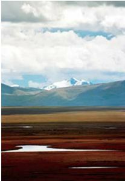
长江南源。当人们在长江下游受益于长江水的时候，人们是否想到，这里是它的源流地呢？
一路高山，一路经塔，一路玛尼石，一路风马旗。一路地行走，一路的虔诚，于是，在这样的情绪中，三江源清晰呈现在眼前。
青海南部青藏高原的腹地，三江源在这里悄然生息。这里，不仅是中国面积最大的天然湿地，还是海拔最高的自然保护区。这里，放眼遍是壮丽的山川，俯视便是水草的肥美。人们亲切地称呼这里为“江河源”，之后又嫌不够劲，改称为“亚洲水塔”。无论人们怎样地推崇，三江源仍是一副淡然的神情，仿佛一位年长的智者，笑而不语间，又将三江细腻地爱抚。
或许，三江源的美皆因它的遥远。因为遥远的距离，我们才恍惚感受其摇曳的经幡；因为遥远的距离，我们才在经幡面前思古，引起万千慨叹。这里，真的是一方圣土，不然，秀美的景致，缘何显得分外绮丽？
三江源奇石
三江源奇石因为产于山江源头而闻名于世。因为三江源得天独厚的地理条件，使得三江奇石以独特的自然生态之美博得人们的喜欢。每一颗石头，都好像大自然对于青海的恩赐，让人们心生感激。
相传，文成公主进藏那年，走到藏汉分明的日月山上。望着面前巍峨的青山，思乡之情不能自已，于是，便在山上梳妆。妆毕，随手将镜子掷于山下。那镜子一分为二，化作金灿灿的太阳，银光光的月亮，从此它们交相辉映，照耀着文成公主西去的路……虽是凄美的故事，可山上立着的“日月山”青石碑，却为故事涂上了一层真实的色彩。
站在日月山顶向下望去，四周皆是俊秀的景色。西面碧波微荡的青海湖，南面，一望无际的青青草原……美得让人心醉。
从故事中走出，再重新走入故事。《西游记》中，老龟将师徒抛入河中，上岸后，那潮湿的经卷，便也是晾晒在这里的石头之上——晒经台……
游走于三江源，看看那湛蓝的天际，一望无边的草原，看看那清澈的江流，停下脚步的瞬间，定会被眼前的一切深深触动。
三江源湿地，有灿烂的野花，美丽的峡谷。
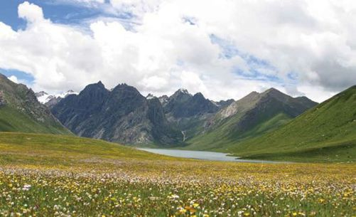
西藏
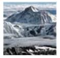
Xizang·诵经的真言
诵经中，隐藏着芸芸众生前世的盼望；日光下，那转经筒辗转出又一个轮回。本来便是圣地，因为人们的席地而坐，更显出几分幽深，因为人们的默祷和跪拜，更显出几分虔诚。西藏，这两个字注定与宿命捆绑在一起，迈着神秘的步子，向天的尽头逃亡……
珠穆朗玛峰
Qomolangma
绝 顶 尽 览 众 山 小
8844.43米，珠穆朗玛峰。仰着头凝视天际，遥想着那样的高度，那里都孕育了怎样的奇迹？
珠穆朗玛峰，地处中尼边界的东段，北坡在西藏境内。它因8844.43米的海拔成为地球山峰中的佼佼者，那形如金字塔状的山体，时刻显露出威武与庄严。
在珠峰的山脊与峭壁间，随处可见大小冰川，美丽的冰塔林也时不时地显现，为它的俊美平添一笔亮色。
从拉萨租一辆越野车，带好抵御高原反应的药品，一路驰骋后，便能彻底投入珠峰的怀抱。
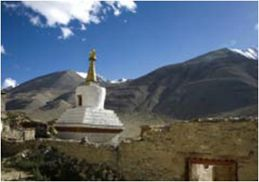
绒布寺作为游人进入珠穆朗玛的一个重要驿站，现实中却显得十分简朴。
无论朝哪个方向前行，似乎总绕不出山的怀抱。西藏的山真的如人们所说，恰似有着独立的灵魂。
两天两夜后，终于抵达珠峰大本营。这个为保护珠峰核心区环境而特别设立的保护地带，对于游人而言，已是难能可贵。因为，到达绒布寺之后，便不可以驾车。或者徒步或者其他，7千米走过之后，才能抵达这里。在珠峰南面的山脚下，绒布寺在海拔5800米的山中建立。它号称是世界上海拔最高的寺庙。
绒布寺作为从北坡攀登珠穆朗玛峰的大本营，几乎成了游人们必经之处。从这里向南极目远眺，犹如巨型金字塔一般的珠峰山体已然出现在视角之中。如逢晴朗，山顶上那团乳白色的烟云格外惹人注目。它好像一面白色的旗帜在珠峰上空挥舞飘扬，由此，“世界最高的旗云”这一景观，便成为世人皆关注的奇景……
太阳照在这个世界最高峰的峰峦周围。
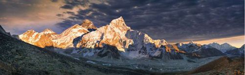
雅鲁藏布大峡谷
Yarlung Tsangpo Canyon
超 脱 的 王 者
即便是环境险恶、灾难频繁，它仍是最为壮阔的一笔。
西藏成就了两个世界之最——珠穆朗玛是世界上最高的山峰，而雅鲁藏布，是世界上最长的河流峡谷。高峰与深谷交错缠绵，强烈的反差中，世界第一的壮丽景观就这样浮出峡谷。
从空中鸟瞰青藏高原，自雪山冰峰间流出的雅鲁藏布江，如一条银白色巨龙，在“世界屋脊”的南部奔腾不息。它琼浆玉液般的河水，不仅造就了沿江奇绝秀丽的景致，而且孕育出灿烂的藏族文化。
雅鲁藏布的河床，平均海拔超过3000米。它是世界上最高的河，下游本是围绕着喜马拉雅，却非要霸气地九转回肠地拖出一条马蹄形的大转弯。它的王者之风让科罗拉多与科尔卡望尘莫及，世界之最的地位坚不可摧。
阿里地区风光
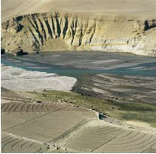
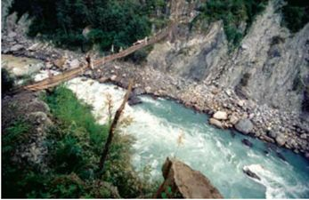
雪山、冰川、林海、草原，抬起头，上方便是一片旖旎，管他热带雨林还是皑皑雪山。它的姿态，犹如神来之笔的辅佐，霸气中满腹豪情。
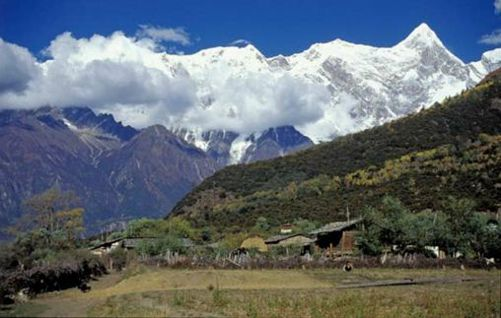
从雅鲁藏布大峡谷看南迦巴瓦峰。
皆是不同的景观，皆是充满奇异的生物，明明在同一坡面，却已穿越九个垂直的自然带，明明前一眼还是北极，后一眼却到了赤道。
有人说，雅鲁藏布注定是一次人类最为重要的历史事件。言语中的神情，仿佛一个帝王时代即将来临。雅鲁藏布江大峡谷是智者，智慧地选择这离天最近的地方，隐匿自己的灵魂。它从不外露，从不擅自去引导别人。它的故事中，总是载满了充满矛盾的喧嚣与宁静，总是在不经意的瞬间，让误闯它领域的敌人在惊慌失措中体验到那份震撼与伟大。
胸襟，是雅鲁藏布大峡谷的风范。它用广阔的胸襟去包容自然界的绮丽，它用辽阔的胸襟来感恩和回报这个空间。将恩泽淋洒于尘世，那份超脱，便在万物之上轻易地显现。
只有隐匿，才让一切重新划分，重新回到又一个原点。
“世人笑我太疯癫，我笑世人看不穿。”在身边人看来，本是价值不菲的珍宝，在王者的眼中，却只是注视着朝起薄雾、落霞染水时锦布上的点点花纹。
洗尽铅华，雅鲁藏布大峡谷就用这样一种方式与姿态思考着，就这样，矗立着，亘古及今。
墨脱
墨脱是中国唯一不通公路的地区之一，几乎与世隔绝，只有夏季才与外界交流。在这里，可以看到雅鲁藏布大峡谷最为艰险壮观的一幕。而且因为这里的山林翠竹，烟云缭绕，使之在不知不觉中扬名四海。
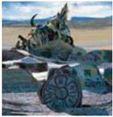
阿里的天地，到处写满了藏区的印记。
阿里
Ali
隐 藏 着 的 神 秘
在古老而神秘的西藏，在寂寥而悠远的高原，面纱背后的脸孔总是引人无限遐想。在这片人口稀少的辽阔土地上，那些虔诚的朝拜者，便是对于阿里全部的释义。
在西藏西部，这个名字像一记古文明中不断深刻的符号，岁月变迁中被风蚀得棱角分明，遂囊括了世界上关于信仰和虔诚的全部定义，它的名字叫“阿里”。海拔4600～5100米之间的圣洁，被人们称呼为凌驾于“西藏”之上——“世界屋脊的屋脊”。
那峰、那画、那寺、那水，阿里总是低调，总是沉默不语。愈是沉默便越显得扑朔，越是高高在上便越显得迷离。
如果有这样一座山，四季冰雪覆盖时会显出金字塔般的圆冠，上空常是变幻莫测的白云缭绕，周围尽是香火旺盛的寺庙，那这样的地方只能有唯一的一个名字——冈仁波齐。
在阿里，有许多终年积雪的山峰。它们会在风云变幻中显出不同的身姿。
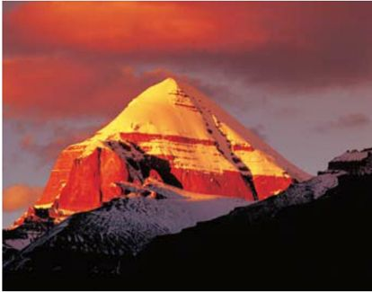
冈仁波齐是冈底斯山脉的主峰，藏语中，它蕴藏着特殊的含义——神灵之山。海拔6656米的高度，毗邻象泉河谷地与拉昂错湖盆，加之常年被冰雪覆盖，这里的神秘而壮美的姿态独树一帜，成为人们心中永远的向往之地。白色，一望无际的白顶，延绵于中、印、尼三国边境，掩面于千年崇敬的时光中。没人知道，为何山的向阳面终年积雪不化，山的背阴面隔年融化……万峰之上的冈仁波齐，充满了冲击视觉与震撼心灵的神力。
遥望历史的滚滚浓烟，古格王朝的豪迈依稀可见。在阿里扎达县扎布让区境内，那高高伫立在300米黄土山上的，便是古格王朝的宫殿。从10世纪到16世纪，这里无限繁华，经过一轮又一轮的扩建，那王宫庙宇，碉楼洞窟，无不将雄伟展现到极致，时至今日，依然能看到它的巍峨。
阿里的水格外清澈，见到的刹那让人如浴神潭，涤荡心灵，更抚平悸动不安的灵魂。
绚丽的色彩是这里美丽的热烈表达。
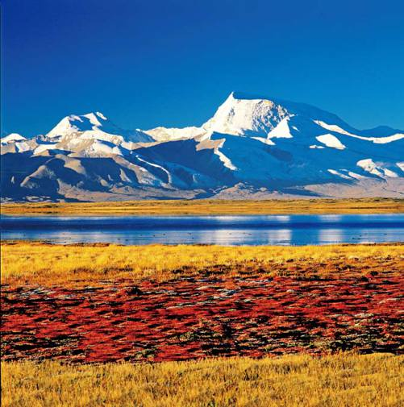
在冈底斯山，两个湖泊格外醒目。圣湖——玛旁雍湖，它是西藏的三大圣湖之一，海拔4588米，一跃成为世界上最高的淡水湖之一。每天清晨，当火红的朝阳从天边升起，耀眼的阳光喷薄千里，连湖水也沾染了那抹金黄，在点点浪花中泛着美丽波光。
在许多宗教传说中，都曾对这个湖写有记载。印度传说中，玛旁雍湖是喜马拉雅山的女儿乌玛女神沐浴的地方，而在西藏的传说中，更是将这里喻为财神居住的地方。在藏语中，玛旁雍的意思翻译为“永恒不败的玉湖”，许是因为如此，玄奘高僧才会在《大唐西域记》中称这里为“西天瑶池”。
过去，在湖的周围有9座寺庙，瓦龙寺、聂果寺、吹果寺……于是，便有信徒传来的关于圣水可以洗去心灵“五毒”的传说。每逢夏季，印度、尼泊尔或是西藏的香客，纷纷来此朝拜，祈求平安。朝拜过后，还将圣湖的水不远万里带回家中，馈赠亲朋好友，只为共享那份圣洁。
在冈底斯山，除了玛旁雍湖，还有一个名为楞伽湖的不起眼的小湖。因为它的不起眼，时常遭受人们的冷落，然而，它遭受的不公平待遇还不仅拘于此。
有人认为，这里曾是罗刹王的主要聚集地，古印度神话中，诱拐美女的九头罗刹王就住在这里。表面看来，楞伽湖与任何湖泊都没有什么两样，可是往来的游客依然记得他们在这里遇到的不吉利的征兆。久而久之，楞伽湖景在人们视线中就这样被隐形多年。佛教中认为，玛旁雍错与楞伽湖分别代表着光明和黑暗，但它们从不是孤立存在的个体，而是相互联系的整体。
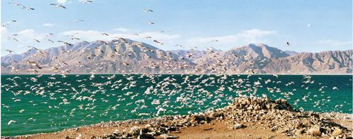
阿里的班公湖。班公湖的面积并不是很大，然而，精灵们却在这里生息繁衍。放眼望去，整个小岛似乎都被白色的鸟群所覆盖，或者说，被鸟群包裹得严严实实。
土林，亦是守护者的一类。扎达土林位于阿里札达县境内，历经远古大湖湖盆及大河河床千万年地质变迁，形成今日的模样。方圆几百平方千米的土林内，遍地是高低错落的“林木”。这里，早期人类洞窟遗址遍布其间，如今依然清晰地呈现给世人。
阿里，一个特别的名字，藏在斑驳的历史中，被沧桑浸染。阿里，无数旅人背起行囊出发的那一刻，脑海中早已刻下地图，抵达时仰望，便会与那份终年不遇的圣洁狭路相逢，然后终生不忘……
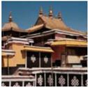
布达拉宫色彩鲜明，以黄、白、黑、红等为主色调。
拉萨
Lhasa
日 光 之 城
那一天，我闭目在经殿香雾中。蓦然听见你诵经中的真言；那一月，我摇动所有的转经筒。不为超度，只为触摸你的指尖；那一年，磕长头匍匐在山路。不为觐见，只为贴着你的温暖；那一世，转山转水转佛塔啊。不为修来生，只为途中与你相见。
——仓央嘉措
望见拉萨的那一刻，听到花开的声音。仿佛郑钧那慢条斯理的吟咏，仿佛白衣女子在地上无声的跪拜。不能确定，梦中“日光城”的云朵里，孕育出来的是否是彼岸之花；不能确定，阳光里播撒出来的是否是虚幻的景象……
拉萨告诉我们：每一个人的心灵里，谁没有这样一座被温柔抚摸、被明亮照耀、被雪山撞击的菩提之城？于是，有人选择匍匐的姿态前行，将所有的祈祷与忏悔置于脊梁之间。
当踏上海拔3650米的拉萨时，脚下感受到的，同样是灰白色的水泥路面。然而，阳光炽烈，瞳孔中，除了金属反射的光芒，便是陌生的当地人黑黝黝的脸。圣城的土地，终于被踏在脚下。
西藏雪顿节，哲蚌寺的僧侣们在举行仪式。
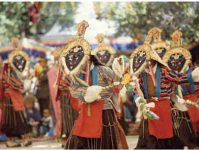
拉萨的天空澄净透明，那抹湛蓝像是在什么时刻吸纳了海洋的色泽一般。而天空之下，阳光炙热而发烫。奔跑，游历，跳跃。这样的地点，就像从哲学家的脑海中走出来的画卷一般，此情此景，想做的，就只是挥霍，或者，等待神的救赎。
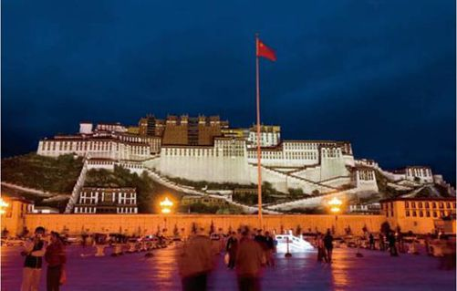
夜色灯光中的布达拉宫。它是外乡人的目的地，却是藏乡人的朝拜圣地。
拉萨的建筑大多显得低矮。或许是因为害怕太高或遭遇更为严重的高原反应吧。再或者，是传统。
而在来到拉萨的那一刻，布达拉宫的身影便成为了脑海中挥之不去的记忆。那样的壮美，在金色阳光下，在红色山峦之巅，它凌空伫立，巍峨壮观。走在布达拉宫的广场，看着整个金碧辉煌的宫殿，那红白相接的层层叠叠，像针突然戳破皮肤的感触，连至心脏。远远望去，仿佛双手捧起一座佛塔，在阳光下，显出至高无上。
行走在拉萨的大街小巷，耳中时不时地传入低低的吟诵，那诵经的声音，像古老魔法书上的咒语，解不开，听不懂。行走在拉萨，似乎应了那句“浪迹天涯”。不知为什么，在这个特别的地方，总能看到一个个形单影孤的艺术家，或留着长发或背着画夹。
去往大昭寺的途中，心中逐渐顿悟。这本是一个神奇的民族，藏起的，不只是如烟的过往，还有奇异的故事。不然，你看那香火缭绕的寺院曲径上，为何载满多姿多彩的壁画？那包罗万象的八廓街上，为何满是一路跪拜的信徒？
心生虔诚，便会生长出虔诚。拉萨，在天高地阔之间，将圣洁传递。
纳木措
Nam Co Lake
奇 异 多 彩 的 神 湖
第一次踏上圣洁的青藏高原，第一次来到纳木措，梦境变成了现实，五颜六色的山花中，满足的笑容挂满眉梢。
纳木措湖坐落在拉萨市，湖面海拔超过7000米。从南岸到北岸，湖面的宽度有30千米还要宽。作为世界上海拔最高的大湖，纳木措显得分外安详。这里，还是藏传佛教的著名胜地，作为密宗本尊——胜乐金刚的道场，藏在人们心中的，不仅仅是那一汪如梦如幻的水泊，更是一方圣水，永远尊奉的圣湖。
相传，纳木措湖本是天宫御厨里的玉液琼浆，是天宫神女们怀中揣着的绝妙宝镜……
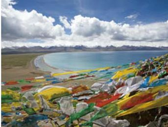
纳木措湖是天地的骄子，它的纯净和美丽是不到这里的人无法真正领会的。
独爱藏饰，那秀美的花纹中，似乎掩藏着什么欲诉不能的秘密。而纳木措湖，便像极了藏饰中一块蓝色的翡翠，通透而明亮。那样奇异的光彩，让人联想到“神光”。神之光芒，保佑苍生。
与纳木措共生的，还有5个岛屿。它们相互依附，兀立于万顷碧波之间。有人说，5个岛屿本是五方佛祖的化身，而来此朝拜的游客，也都不是为了山水之乐，他们在转湖念经中，有着各自的祈愿。
在纳木措，总会遇到这样那样的朝拜者。或是回眸一瞥，或是擦肩而过，转身的瞬间，总有一种灵魂的互通。也许这便是神湖的魔力，深深的对视中，便已洗去铅华。